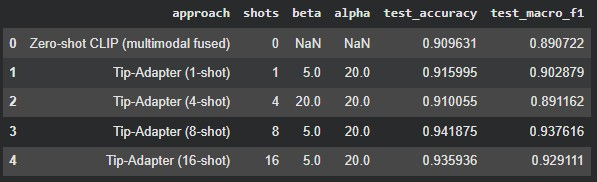

Assignment 1
Comparing pretrained deep learning models on image, text, and multimodal datasets.
Comparing pretrained deep learning models on image, text, and multimodal datasets.
Compare two text-classification families, RNNs such as LSTM and Transformers, on the same dataset with the same evaluation metrics for a fair comparison.
Compare two image-classification families, pretrained CNNs and ViTs, after training or fine-tuning them on the same dataset and reporting the same metrics.
Compare zero-shot and few-shot classification on a genuine image-text paired dataset while keeping the evaluation consistent across both multimodal approaches.
